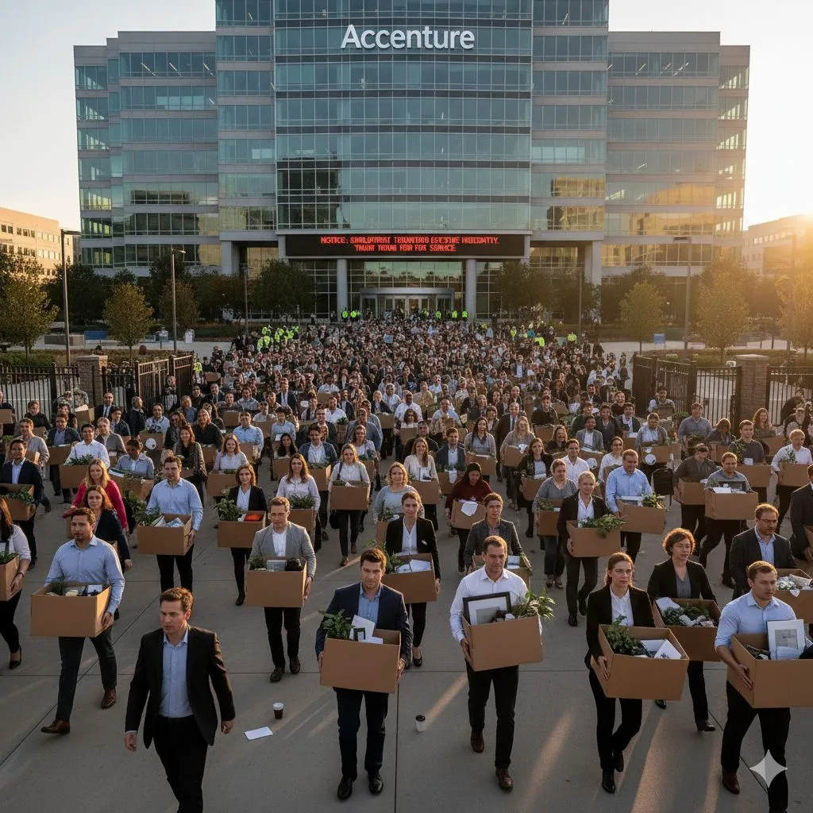

Accenture cuts 11,000 jobs in an AI restructuring
Originally posted on LinkedIn, October 20, 2025.
Accenture cut more than 11,000 jobs in the last three months as part of an AI-focused restructuring. The company made it clear that employees who cannot learn the required skills will have to leave.
At the same time, Accenture reported $69.7 billion in revenue and $5.1 billion in GenAI services. The layoffs also carry a significant financial cost: about $615 million in the latest quarter, with another $250 million expected in the next quarter. The full program totals about $865 million for retraining, write-offs, and workforce reductions.
The headline sounds alarming, but the scale matters. Accenture employs most of its workforce in India, and its total headcount fell from 791,000 to 779,000. Meanwhile, the company says it has already retrained more than 77,000 employees as AI and data specialists as part of a broad internal training investment.
The latest reports showed 7% revenue growth and 6% growth in net income, suggesting that the restructuring has not hurt short-term growth.
Accenture is a global consulting and management company headquartered in Dublin, Ireland. It operates in more than 120 countries and provides services across strategy, technology, management consulting, digital services, and outsourcing. In recent years, it has become one of the world's largest companies leading digital transformations for clients in finance, healthcare, industry, and technology.
This is what AI adoption looks like inside a large international company. Accenture is not just adding new technology. It is changing the structure and skills of its workforce to match a business reality shaped by AI.
